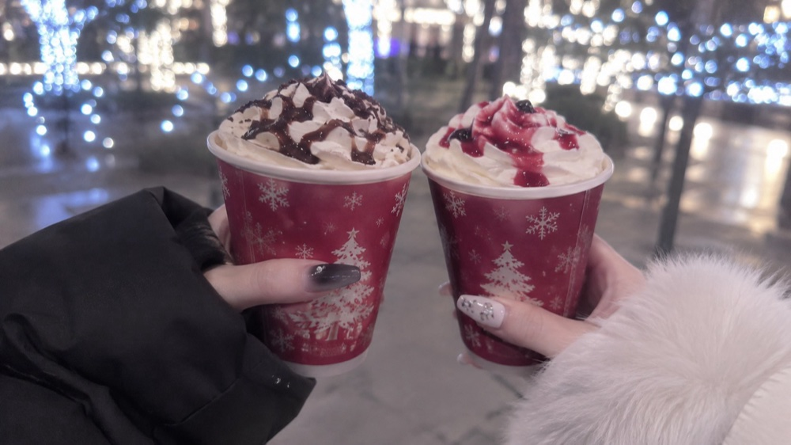
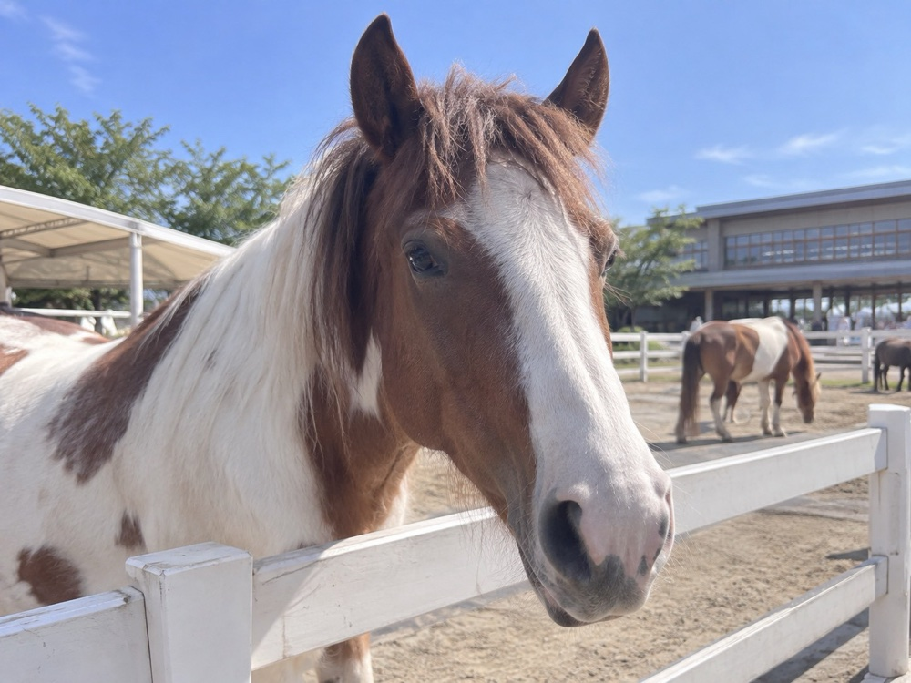
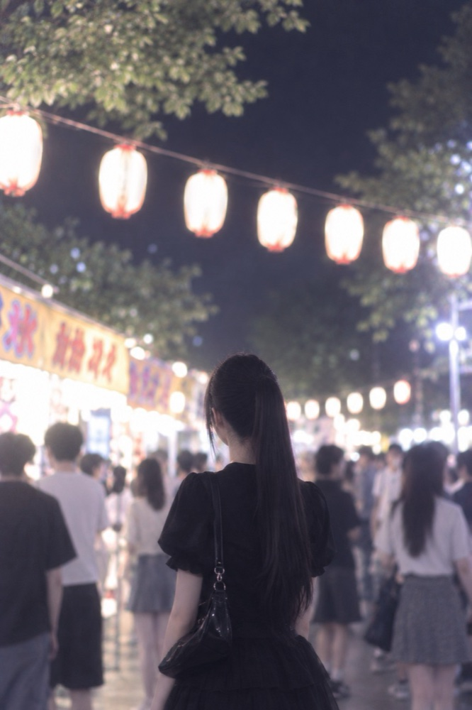

UnRe:alの一番星🌟
まずは、お知らせが出てから今日まで発信できていなくてごめんなさい。そして、沢山皆さんにご心配をおかけして申し訳ないです。 私たちもりんのことについては全然詳しく知らされていなくて、正直戸惑っています。気持ちの整理が着いていないです。 もっと早く気がついてあげられてたら、とか。 無理させちゃってたのかな、とか。 りんは責任感が強くて誰よりも仕事熱心だから、私たちが知っている以上にきっと頑張ってて。 何も出来なかった自分が情けない。 でも1ヶ月後には過去最大規模のライブも控えてます。りんがいつ帰ってきても大丈夫なように、私たちは全力でレッスンして、ライブに向けて走り続けて、りんの居場所を守り抜きます。 これからもどうぞ、UnRe:alをよろしくお願いします。 星名らん
やっほ～！らんだよ🙆🏻♀️ 今日はみーとふたりでお仕事してきたよ〜！！✨ ふたりだけでのお仕事ってなんか久しぶりだった気がする！！😳💭 お仕事のあとにカフェ寄ったらちょうど期間限定のドリンクがあったから、ダイエット中なのについふたりで飲んじゃった😸私はチョコでみーはベリーのやつ！

クリスマス限定ってだけでもうテンション上がるよね～！🎄🎅見た目もかわいかったし、あまあまでめっちゃおいしかった🥺🎀🧸 帰りはみーとイルミネーション見ながら歩いて帰ってきたの！！ロマンチックすぎ笑 …てか私にもまだサンタさんくるかな！？ 欲しいものいっぱいあってこまっちゃうね😔 みんなもいいクリスマスを🎅🎄
らんだよ🙆🏻♀️ 今日はりんとお出かけしてきたよ～！！ りんが運転してくれて、ふたりでドライブしてきたの🚗💨私は助手席で一生しゃべってた😸 目的地をちゃんと決めないで気になったSAとか道の駅に寄りながらのんびりドライブしてたんだけど、こういうの楽しいよね～！ 道の駅ってその場所によって売ってるものとか全然違うから、見てるだけでも結構楽しかった🥺✨ おいしそうなものもいっぱいあって、何買うかめっちゃ悩んじゃった笑 あとね、途中で寄った道の駅に馬がいたの！！！

ｳﾏｰ🐴 めっちゃかわいくて、餌やり体験もできたから餌やってきた🥺🥕 近くで見ると結構大きくてびっくりしたけど、すっごいおとなしくていい子でかわいかった🫶 りんの運転姿眼福だった～😸メンバー特権！いいでしょ✌🏻 りんいつも運転ありがとう！！ またドライブ行こうね🚗💨 次はどこ行こうかな～👀 それじゃあまたね～！💙
新年あけましておめでとうございます‼️今年も星名らん、そしてUnRe:alをよろしくお願いします‼️ 今日は仕事始めだったよ～！とあるインタビューで年始の抱負を聞かれたんだけど、なんか毎年同じこと言ってるかも…？😵💫って思いながらも色々喋らせてもらった！解禁お楽しみに🫵🏻 年末のライブのあとはそれぞれ実家に帰ったりとかでバラバラだったからメンバーに久しぶりに会った気がしたな～🥺🥺 といいつつ1週間も経ってないんだけどね！？仲良すぎかも💦💦 ⬆️みーが横からなんかこの書き方嘘くさいからやめろって言ってきた😠やめない😠 何はともあれ！年始からみんなテンション高くて元気で安心したよー笑 今年もガンガン盛り上げていくぞーっ‼️❤️🔥
らんだよ～！🙆♀️ 今日は文化の日！久々の祝日だったね㊗️ 実はらんさん、意外と美術館とか行くの好きなんだ👀 ってことで！あきと一緒に期間限定の展示見てきたよ～！ 静かな空間って癒されるよね🥺なーんにも考えずに綺麗なものを見るのってデトックス？って感じで好きなんだ～♡ 昔美術の教科書で見かけた絵とかもあったりして興奮しちゃった😳 私もいつか教科書載れるかな…？笑
らんだよ🙆🏻♀️ 連日あっちあちだね😭😭 この前、お仕事終わりにみんなで夏祭りに行ってきました～！！🏮✨

これはなぎの後ろ姿📷 お祭りって屋台いっぱいあるから、何食べるか選ぶ時間が一番楽しいかもしれない😸 焼きそば食べて～たこ焼き食べて～最後にかき氷とあんずあめも🍧 満喫しすぎて食べすぎた！！笑 かき氷はもちろんブルーハワイ💙 青いものを見るとついつい選んじゃうんだよね～😂 人がそんなに多くないお祭りだったからみんなでワイワイできて楽しかった～🏮✨ 夏って暑くて大変だけど、夏にしかできないこともいっぱいあるから好き！ …誕生日もあるし👀笑 明日から学校の人も多いのかな？ 学校もお仕事も無理せず頑張っていこうね👍🏻 みんなは今年の夏、楽しかった～？？🙌🏻💙
ブログを見てくれているみなさん！はじめまして～🙋🏻♀️ このたびデビューになりました！アイドルグループ｢UnRe:al(あんりある)｣の、星名 らん(せいな らん)です💙あ、"ほしな"じゃなくて "せいな" です！！笑 今日からブログが始まるということで…ドキドキだぁ～🥺 まずは最初なので自己紹介をしていきたいと思います！ 💎ぷろふぃ～る💎 誕生日･･･8月6日生まれ🎂(年齢はヒミツ😸) メンバーカラー･･･ブルー💙💙💙 趣味･･･走ること🏃♀️、食べること🍜 特技･･･ダンス💃 ファンマーク･･･💎🐑 チャームポイントは青髪ボブ💙メンカラと一緒だよ🫶 今日初めて知ってくれた人はぜひぜひ青髪の子で覚えてね🙌🏻✨ そしてそして‼️前から私のことを知ってくれてたみんな～！久しぶり！！🥺 またこうして会えるの、すっっごくうれしいよ😭末永くよろしくね🤝🏻🌟 これからたくさん楽しいことしていきたいな～！ ブログもいっぱい更新する予定なので、ぜひ遊びにきてください😸💙 これからよろしくね！ またね～！💎🐑